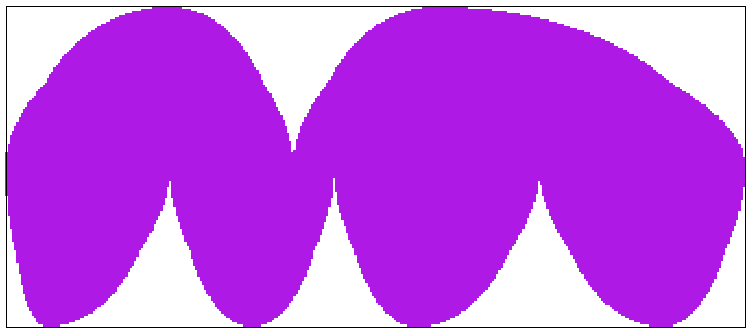

Chapter 3 Making Goode Homolosine grid
This chapter explains how to make a global grid in the Goode Homolosine projection. This grid has a cellsize of 10x10km.
3.1 R-script
Packages are automatically installed (if needed) and loaded from library.
list.of.packages <- c("raster", "rgdal", "dplyr", "data.table")
new.packages <- list.of.packages[!(list.of.packages %in% installed.packages()[,"Package"])]
if(length(new.packages)) install.packages(new.packages, dependencies = TRUE)
library(raster)
library(rgdal)
library(dplyr)
library(data.table)saga_cmd and gdal are linked to the R console.
if(Sys.info()['sysname']=="Windows"){
saga_cmd = "C:/Users/11026685/Downloads/saga-7.6.3_x64/saga-7.6.3_x64/saga_cmd.exe"
} else {
saga_cmd = "saga_cmd"
}
system(paste(saga_cmd, "-v")) #"SAGA Version: 7.6.3 (64 bit)" if succesful
if(.Platform$OS.type == "windows"){
gdal.dir <- shortPathName("C:/Program files/GDAL")
gdal_translate <- paste0(gdal.dir, "/gdal_translate.exe")
gdalwarp <- paste0(gdal.dir, "/gdalwarp.exe")
} else {
gdal_translate = "gdal_translate"
gdalwarp = "gdalwarp"
}
system(paste(gdalwarp, "--help")) #If done correctly, this will give help menuWorking directory is set.
setwd("D:/people/Tim/grid")Parameters are set. Goode Homolosine mask is specified. Cellsize, extent and desired projection are also set.
gh.shp = "input/Goode_Homolosine_domain.shp"
cellsize = 10000
te = c(-20037508,-8683260, 20037508, 8683260)
gh.prj = "+proj=igh +ellps=WGS84 +units=m +no_defs"The mask shapefile is converted to a grid for the given cellsize.
system(paste0(saga_cmd, ' -c=64 grid_gridding 0 -INPUT \"', gh.shp, '\" -FIELD \"FID\" -GRID \"output/Goode_Homolosine_domain_10km.sgrd\" -GRID_TYPE 1 -TARGET_DEFINITION 0 -TARGET_USER_SIZE ', cellsize, ' -TARGET_USER_XMIN ', te[1]+cellsize/2,' -TARGET_USER_XMAX ', te[3]-cellsize/2, ' -TARGET_USER_YMIN ', te[2]+cellsize/2,' -TARGET_USER_YMAX ', te[4]-cellsize/2)).sgrd is converted to .tif.
system(paste0(gdal_translate, ' output/Goode_Homolosine_domain_10km.sdat output/Goode_Homolosine_domain_10km.tif -a_srs \"', gh.prj, '\ -ot \"Byte\"'))
A data frame with coordinates is made from the grid and cell ID is added. Coordinates specify the centroid of each grid cell.
gh_grid <- raster("output/Goode_Homolosine_domain_10km.tif")
gh_grid_df <- as.data.frame(gh_grid, xy=TRUE, centroids = TRUE, na.rm = TRUE) # Remove cells with no land coverage
gh_grid_df$cell_ID <- 1:nrow(gh_grid_df)This data frame is converted to a format to be used in Marxan.
marxan_grid <- gh_grid_df %>% select(cell_ID, x, y)
fwrite(marxan_grid, "output/grid_table.csv", row.names = FALSE, sep=",", dec = "." )| cell_ID | x | y |
|---|---|---|
| 1 | -11377492 | 8678260 |
| 2 | -11367492 | 8678260 |
| 3 | -11357492 | 8678260 |
| … | … | … |